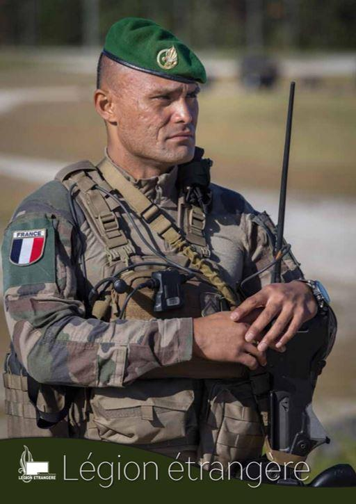
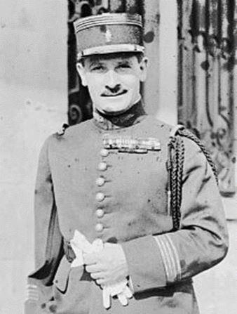
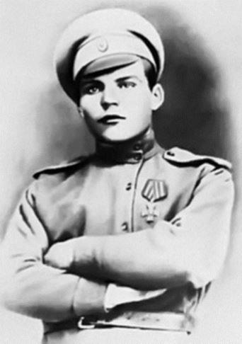
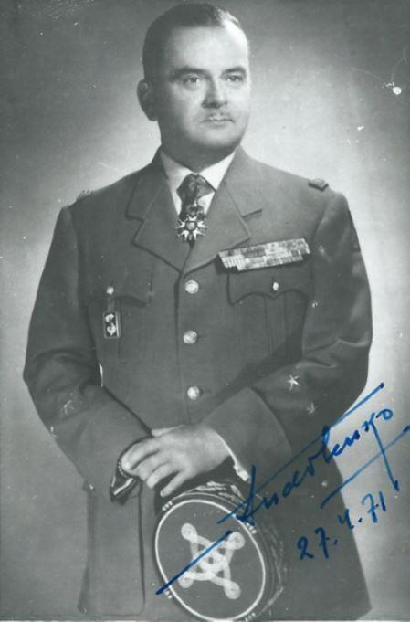
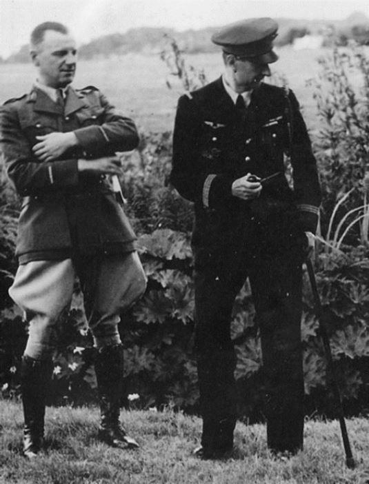

La Légion Étrangère jouit d'un statut spécial bien connu par toutes les personnes intéressées où qu'ils vivent et c'est encore peu dire. Pour expliquer à quel point la renommée de ce corps d'élite de l'armée française réservée aux étrangers resplendit à travers le monde, il suffirait de narrer une histoire des plus édifiantes sur un légionnaire d'origine... mongole. Le pauvre gars né au tréfonds de son pays asiatique a appris l'existence de la Légion, mais n'avait pas un sou vaillant pour gagner la France.
La Mongolie se trouvant à des milliers de kilomètres de distance par rapport à l'Hexagone, l'intéressé devait automatiquement prendre le train ou, encore mieux, l'avion.
Mais comment faire sans argent et, par conséquent, moyen d'obtenir un visa pour accéder légalement au sol français ? Les perspectives n'étaient pas brillantes et finalement le Mongol en question a enfourché son vélo et couvert toute la distance le séparant d'Orange sur son deux-roues préhistorique en franchissant la frontière de l'UE en tant que clandestin. Il suffit de dire qu'il a été accepté et devenu par la suite adjudant-chef.
Cette histoire est des plus édifiantes. Il est à dire que les Russes sont beaucoup plus nombreux dans les rangs des képis blancs par rapport au contingent mongol. Certes, les Espagnols, Suisses et Portugais sans compter les tricolores forment l'absolue majorité de recrues. Cependant, les Russes aussi bien que les Ukrainiens, surtout après la débandade soviétique, savent que les portes couronnées de la belle inscription Legio Patria Nostra leur sont toujours grand'ouvertes à condition de passer les examens, bien sûr.
La gloire immortelle du deuxième régiment qui combattit en Afrique au début du XXième y est également pour quelque chose. C'est qu'après le départ des dernières troupes de l'Armée Blanche de la Crimée aussitôt occupée par la cavalerie rouge qui talonnait de près les militaires à la cocarde blanche, ceux-là s'en allèrent se réfugier en Turquie.
A ce qu'il paraît, les recruteurs de la Légion y furent vraiment très actifs, car plus de 40.000 personnes, pour la plupart vétérans de la guerre de 14-18 et de la guerre civile russe, prirent leur billet d'entrée.
Ironie du sort, le frère de l'un des dirigeants soviétiques (Sverdlov), Zinovi Pechkoff eut été de cette foule nombreuse à passer le Rubicon. Il finit sa carrière comme général à quatre étoiles et ami intime du grand de Gaulle. C'est Pechkoff qui dirigeait les travaux du renseignement militaire français en Indochine, dans les années 50, la veille de la décolonisation.
Le général PechkoffIl fut très prisé par un autre officier français d'origine russe Constantin Melnik, conseiller auprès de de Gaulle, coordinateur des services de renseignement auprès de Michel Debré entre 1959 et 1962 et ensuite chef de la très connue Rand Corporation, think-tank de la CIA à l'aigle étoilé.
Le général Pechkoff se fit enterrer à Sainte-Geneviève-des Bois où de nombreux Russes blancs trouvèrent leur dernier refuge. L'homme parlait sept langues et reçut plus de 50 décorations françaises et étrangères.
Un autre nom du militaire qui finit par se ranger de l'autre côté des barricades de la Guerre Froide - maréchal soviétique Rodion Malinovski. On peut dire que la France et la Légion façonnèrent l'homme et en firent un véritable guerrier. Âgé de 16 ans, le jeune Rodion rejoignit le Corps expéditionnaire russe qui, côte à côte avec les Français défendit la capitale dans la Marne et jusqu'à la région compiégnoise. Si l'on se rend à Villers-Cotterêts en Picardie, pas loin de Pierrefonds on aura vite fait de découvrir sur la place de la Mairie les pièces d'artillerie de gros calibre qui sortirent de l'usine saint-pétersbourgeoise Poutilov.
Les canons font désormais partie de la mémoire française et les corps des soldats russes péris il y a déjà plus de cent ans devinrent terre française. Malinovski combattit à Compiègne et puis, poussé par ses camarades de régiment, participa à l'insurrection lorsque les soldats russes réclamèrent leur retour à la mère-Patrie après la révolution soviétique de 1917. L'argument des autorités françaises que la guerre n'était pas encore terminée, resta caduc. La police militaire mit fin à la mutinerie et Malinovski eut droit à quelques mois de travaux forcés. Finalement il rejoignit la Légion et combattit bravement jusqu'à l'Armistice.
Parti ensuite en URSS selon un accord de rapatriement, il fit carrière dans l'armée et devint l'un des maréchaux de Staline de la Seconde Guerre mondiale. Comme quoi les voies de Dieu sont impénétrables et encore moins les aléas de la destinée de ceux qui choisissent de servir les armes à la main.
Les légionnaires russes gardèrent l'espoir de livrer un jour leur compte aux Bolchéviks. Ils servaient la France loyalement, mais avaient toujours un œil rivé sur leur Patrie chérie. Lorsque la guerre finno-soviétique éclata, nombreux furent les képis blancs originaires de la Russie qui se portèrent volontaires pour rejoindre la ligne Mannerheim en demandant leur mutation à la XIII demi-brigade de Légion. Pourtant Paris ne voulait absolument pas que l'émotionnel l'emporte sur le rationnel. Les Russes purent partir en direction du Nord mais pour aller en Norvège et point en Finlande. Ainsi tout conflit avec les anciens compatriotes eut été évité quoique de justesse.
À cette époque les Russes qui combattirent sous l'insigne de la grenade à 7 flammes, étaient vraiment de vrais professionnels, aguerris dans les tranchées de Verdun et de la Marne. Échoués dans la Légion, francophones dès leur plus tendre enfance comme beaucoup de nobles de l'époque, ils n'oublièrent pourtant jamais leur passé orthodoxe. Ainsi le dialogue entre un inspecteur dans le grade du général arrivé dans les casernes des légionnaires et un militaire du rang, fut des plus comiques :
Vous avez une allure irréprochable. Avez-vous déjà servi auparavant ?
Oui, Mon Général !
Et quel a été votre grade ?
Général, Mon Général !
Ce cas est parfaitement véridique. Il s'agit d'un Russe blanc, général Boris Khreshatitski, qui quitta sa Patrie après la défaite Blanche dans le grand Est russe. Il sut faire valoir ses acquis et finalement devint lieutenant dans la Légion et décoré de la Légion d'honneur et de la médaille de la Résistance.
Général de Brigade Serge ANDOLENKO (1907 – 1973 )
D’origine Russe, il fut naturalisé Français en 1928. Il fut nommé Général de Brigade en 1961. Il fut Inspecteur-Adjoint de la Légion Étrangère (dans laquelle il a fait une grande partie de sa carrière), puis Attaché Militaire à Vienne en Autriche.
Il était Grand-Croix de la Légion d’Honneur Commandeur de l’Ordre National du Mérite, Croix de Guerre 1939-1945, Croix de Guerre des TOE, Croix de la Valeur Militaire, Officier des Palmes Académiques, Commandeur du Nicham Iftikar de Tunisie, Commandeur du Ouissam Alaouite du Maroc, Commandeur de l’Ordre pour le Mérite d’Autriche, Bronze Star Medal des Etats-Unis et de nombreuses autres décorations françaises et étrangères
Boris CHELIAKINE,
Boris Chéliakine en 1941le Cosaque du Don, fait aussi partie de ces citoyens russes qui serviront avec brio au sein de la Légion étrangère. Élève au Corps des Cadets du Don Alexandre III (Novotcherkassk), il participe dès l'hiver 1917-1918 aux premiers combats des « Blancs » contre les « Rouges » dans le sud de la Russie où le général Kalédine le décore de la Croix de Saint Georges. Il termine sa formation à l'école militaire Atamansky et est promu officier au régiment des Cosaques de la Garde dont il partagera la vie en exil. En 1920, il combat aux côtés des Serbes puis demande l’asile à la France. Chauffeur de taxi, il va s’engager au moment de sa création, en mai 1940, au 23ème Régiment de marche des volontaires étrangers (RMVE) Placé sous les ordres du lieutenant-colonel Gaston Aumoitte, Chaliakine quitte le camp du Barcarès le 3 juin 1940, pour prendre part à la bataille de Soissons le 7 juin. Il participe à de nouveaux combats à Pont-sur-Yonne le 15 et le 16 juin.
 Juillet 1940 – Le « Convalescent hospital for officers » - Dutton Homestall - à East grinstead (Surrey)
À l’issue de l’armistice de juin 1940, l’unité est dissoute le 1er juillet. Boris Chéliakine, comme plusieurs de ses camarades, rejoint Londres et intègre les Forces Françaises Libres et est affecté au bataillon du Pool d'AEF. Il participe à la campagne du Gabon puis demande sa mutation au Levant dans une unité combattante engagée sur le théâtre d'opération du Moyen Orient
Il est alors affecté au BM7 unité de souveraineté du Levant puis intègre, en 1942, la 22e CNA, unité chargée de la protection des terrains avancés des FAFL au Moyen où il restera affecté jusqu’en 1945.
Le destin de certaines personnalités est une chose à la fois fascinante et incroyable. La France a gardé un vieux principe, propre encore à l'Empire Romain : c'est celui de pouvoir intégrer la nationalité française en payant ce droit par le sang versé pour l'honneur du pays d'adoption. Aujourd’hui encore de jeunes russes viennent écrire de leur sang l’Histoire de France en s’engageant dans la Légion étrangère. Certains y feront un seul contrat, bien d’autres ayant trouvé une famille réaliseront une longue carrière sous le légendaire képi blanc.
Partager cette page